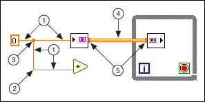

You transfer data among block diagram objects through wires. Each wire has a single data source, but you can wire it to many VIs and functions that read the data, similar to passing required parameters in text-based programming languages. You must wire all required block diagram terminals. Otherwise, the VI is broken and will not run. Display the Context Help window to see which terminals a block diagram node requires. The labels of required terminals appear bold in the Context Help window.
Wires are different colors, styles, and thicknesses depending on their data types, similar to how the color and symbol of a terminal indicate the data type of the corresponding control or indicator. A broken wire appears as a dashed black line with a red X in the middle. Broken wires occur for a variety of reasons, such as when you try to wire two objects with incompatible data types. The arrows on either side of the red X on the broken wire indicate the direction of the data flow, and the color of the arrows indicate the data type of the data flowing through the wire.
Refer to the control and indicator data types table for more information about data types.
Wire stubs are the truncated wires that appear next to unwired terminals when you move the Wiring tool over a VI or function. They indicate the data type of each terminal. A tip strip also appears, listing the name of the terminal. After you wire a terminal, the wire stub for that terminal does not appear when you move the Wiring tool over its node.
A wire segment is a single horizontal or vertical piece of wire. A bend in a wire is where two segments join. The point at which two or more wire segments join is a junction. A wire branch contains all the wire segments from junction to junction, terminal to junction, or terminal to terminal if there are no junctions in between.
Most wires represent synchronous communication from one node to another. Channel wires are a kind of wire that represents asynchronous communication. Channel wires have an off-center stripe of the data color faded out on one side. They do not draw tunnels as they enter or leave structures. Channel wires draw small blocks called flanges on the tips of node terminals where the wire connects to the terminal.
The following illustration shows a wire segment, bend, junction, a channel wire, and flange.

| 1 | Segment |
| 2 | Bend |
| 3 | Junction |
| 4 | Channel Wire |
| 5 | Flange |
Use the Wiring tool to manually connect the terminals on one block diagram node to the terminals on another block diagram node. When you move the Wiring tool over a terminal, the terminal blinks. When you move the Wiring tool over a VI or function terminal, a tip strip also appears, listing the name of the terminal. Wiring to the terminal might create a broken wire. You must correct the broken wire before you can run the VI.
Use the Context Help window to determine exactly where to connect wires. When you move the cursor over a VI or function, the Context Help window lists each terminal of the VI or function.
|
Note��Click the Show Optional Terminals and Full Path button in the Context Help window to display the optional terminals of the VI or function. |
You also can use the Context Help window to determine which types of data to wire to the terminals of objects. When you move the cursor over the terminal of a VI or function, the Terminal Data Type field of the Context Help window describes which data type the terminal accepts. If the terminal accepts multiple data types, the Terminal Data Type field describes the default data type for the terminal.
|
Note��If you wire two objects of different data types, and the types are similar enough for LabVIEW to coerce the data types to match, LabVIEW places a coercion dot on a block diagram node to alert you that LabVIEW coerced the value passed into the node to a different representation. In certain coercions, coercion dots may lead to an increase in memory usage and execution time and a decrease in accuracy of results. |
While you are wiring a terminal, bend the wire at a 90 degree angle once by moving the cursor in either a vertical or horizontal direction. To bend a wire in multiple directions, click the mouse button to set the wire and then move the cursor in the new direction. You can repeatedly set the wire and move it in new directions.
To undo the last point where you set the wire, press the <Shift> key and click anywhere on the block diagram. (macOS) Press the <Option> key and click. (Linux) Click the middle mouse button. To abort the entire wiring operation, right-click anywhere on the block diagram or press the <Esc> key.
To swap wire positions on a function with two inputs without manually deleting and replacing the wires, press the <Ctrl> key while clicking one of the inputs.
 |
Caution�� Crossing wires can clutter a block diagram and make the block diagram difficult to debug. |
As you move a selected object close to other objects on the block diagram, LabVIEW draws temporary wires to show you valid connections. When you release the mouse button to place the object on the block diagram, LabVIEW automatically connects the wires. You also can automatically wire objects already on the block diagram. LabVIEW connects the terminals that best match and does not connect the terminals that do not match.
Toggle automatic wiring by pressing the spacebar while you move an object using the Positioning tool.
By default, automatic wiring is enabled when you select an object from the Functions palette or when you copy an object already on the block diagram by pressing the <Ctrl> key and dragging the object. Automatic wiring is disabled by default when you use the Positioning tool to move an object already on the block diagram.
(macOS) Press the <Option> key. (Linux) Press the <Alt> key.
You can disable automatic wiring by selecting Tools�Options and selecting Block Diagram from the Category list.
LabVIEW automatically finds a route for a wire as you wire it. LabVIEW routes a wire around existing objects on the block diagram, such as loops and structures. LabVIEW also routes a wire to decrease the number of bends in the wire. When possible, automatically routed wires from control terminals exit the right side of the terminal, and automatically routed wires to indicator terminals enter the left side of the terminal.
To automatically route an existing wire, right-click the wire and select Clean Up Wire from the shortcut menu. You can reroute all existing wires and rearrange all existing objects on the block diagram automatically.
Press the <A> key after you start a wire to temporarily disable automatic wire routing and route a wire manually. Press the <A> key again to enable automatic wire routing for the wire. After you end the wire, LabVIEW enables automatic wire routing again. You also can temporarily disable automatic routing after you click to start or set a wire by holding down the mouse button while you wire to another terminal or set point and then releasing the mouse button. After you release the mouse button, LabVIEW enables automatic wire routing again.
You can disable automatic wire routing for all new wires by selecting Tools�Options, selecting Block Diagram from the Category list, and removing the checkmark from the Enable automatic wire routing checkbox.
If you disable automatic wire routing, you can wire terminals vertically or horizontally depending on the direction in which you first move the Wiring tool. The wire connects to the center of the terminal, regardless of where you click the terminal. After you click the terminal, press the spacebar to switch between the horizontal and vertical direction.
You also can press the spacebar to switch between the horizontal and vertical direction if automatic wire routing is enabled. If LabVIEW finds a route for the wire in the new direction, the wire switches to that direction.
Select wires by using the Positioning tool to single-click, double-click, or triple-click them. Single-clicking a wire selects one segment of the wire. Double-clicking a wire selects a wire branch. Triple-clicking a wire selects the entire wire.
You can use an owned label to label a long wire and identify its use. To create an owned label on a wire, right-click the wire and select Visible Items�Label from the shortcut menu. Labeling wires is useful for wires coming from shift registers and for long wires that span the entire block diagram. You can move an owned label anywhere along the wire. You cannot lock an owned label to a wire.
A broken wire appears as a dashed black line with a red X in the middle . Broken wires occur for a variety of reasons, such as when you try to wire two objects with incompatible data types. Move the Wiring tool over a broken wire to display a tip strip that describes why the wire is broken. This information also appears in the Context Help window when you move the Wiring tool over a broken wire. Right-click the wire and select List Errors from the shortcut menu to display the Error list window. Click the Help button to display more information about why the wire is broken.
Triple-click the wire with the Positioning tool and press the <Delete> key to remove a broken wire. You also can right-click the wire and select from shortcut menu options such as Delete Wire Branch, Create Wire Branch, Remove Loose Ends, Clean Up Wire, Change to Control, Change to Indicator, Enable Indexing at Source, and Disable Indexing at Source. These options change depending on the reason for the broken wire.
To remove all broken wires, select Edit�Remove Broken Wires or press the <Ctrl-B> keys. (macOS) Press the <Command-B> keys. (Linux) Press the <Meta-B> keys. You also can select a structure or area of the block diagram from which you want to remove broken wires and press the <Ctrl-B> keys to remove broken wires from only the selected area.
|
Caution��Use caution when removing all broken wires. Sometimes a wire appears broken because you are not finished wiring the block diagram. |
You also can break a wire if you delete a segment of the wire. Reconnect the wire segment to fix the broken wire.
|
Note��If you delete a segment of a wire with an owned label, the broken wire retains the label. If you connect two broken wires that have owned labels, the label of the wire connected to the source terminal becomes the label of the new wire. |